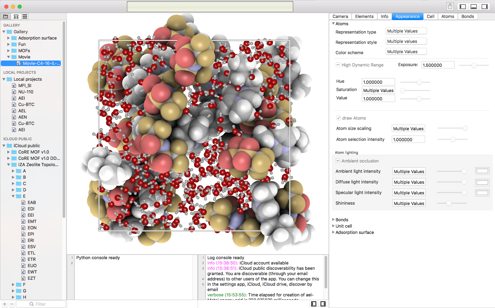

Figure: The project navigator drives changes in the detail-view. The navigator area includes the navigator selector bar at the top,
a content area (containing a project-gallery, the local projects, and the icloud-projects) and at the bottom a filter bar.